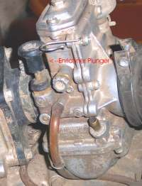
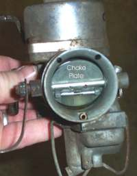
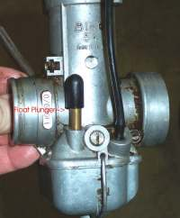
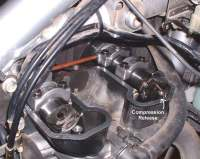
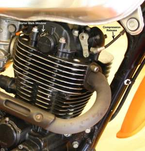
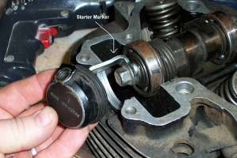
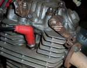
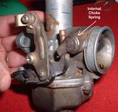

Starting The Engine
Starting an engine. It should be easy, but sometimes it isn't. Each engine has a starting procedure or drill. The reason for this is that cold gas does not vaporize well. Gas will not burn unless it is in a vapor form. The colder the engine is, the harder it is for gasoline to vaporize. Bush pilots who have crashed in the Arctic report that gasoline will not start a fire in forty below zero temperatures. In fact, you can put a lit match out in it. Fortunately, we usually do not have to start our bikes at forty below but we do have to start our engines when they are cold. For this reason most engines require a richer then normal fuel mixture to start from cold. A hot engine quickly vaporizes fuel from the carb. Because a cold engine doesn't vaporize gas as well as a hot one, you must put in a larger quantity of fuel to get enough vaporized gasoline to start the engine.
Motorcycle carburetors have either an enriching circuit, a choke or a float plunger.
 Carb with Enrichening Circuit. |
 Choke type carb. |
 Float plunger carb. |
- If you have an enriching circuit type carburetor the starting drill is this. Turn on the ignition and fuel, pull the enriching lever or plunger, leave the throttle closed, and hit the starter button or kick start the engine. If you open the throttle any it will prevent the enriching circuit from working properly. Sometimes the plunger will be activated by a lever or a cable.
- If you have a choke type carburetor the starting drill is this. Turn on the ignition and fuel, put on the choke, open the carburetor throttle 1/8 to 1/4 and hit the starter button or kick start the engine. The choke can be operated by a lever or a cable. Sometimes, the choke lever will have a spot to attach a cable too.
- If you have a carburetor that only has a float plunger, you will need to hold the plunger down till the carb floods. Then open the throttle about 1/8 to 1/4 and then kick or hit the button. Some carbs will have both a choke and a float plunger.

This will start most engines. As an engine ages and piles up the miles you may need to vary the starting drill just a bit. Perhaps open the throttle a bit more or less. Open it for one kick and then close it. You will just have to experiment with each engine.
Older British twins like Norton, Triumph, and BSA require a staring drill that is just a bit different. Turn the gas and ignition on but don't put on the choke. With your thumbs, push the float plunger on the side of the carb (also called a float tickler) down and hold it down till your thumbs become wet with gasoline. Now open the throttle about 1/8 of a turn and kick. My Norton 750cc twin would always start within three kicks using this method.
If you put on the choke or enriching circuit and find that you have put too much extra gas into the engine, flooding it, you can clear the engine by opening the throttles wide open and cranking the engine. This creates a zero vacuum condition in the throat of the carburetor. That means only air, and no gas is drawn into the engine. This, in turn, will clear the excess gasoline out of the engine.
When you rebuild an engine all the parts are new and rough and don't really know each other very well. Because of this, a new engine may be hard to start for the first time. With a fire extinguisher close by, try a small squirt of gas, from an eye dropper, down the spark plug hole. Reinstall the spark plug and it should start. You can use starting fluid, but you need to be very careful and NOT use too much. Same with gas. Just a small squirt. If it doesn't start, find out why. Don't keep pouring more gas or starting fluid down the engine. If you do, a stray spark could end up blowing the exhaust pipe off or setting fire to the engine!
Sometimes you will run across an old two stroke engine that will only start with a squirt of starting fluid. Often, the engine will continue to start for the rest of the day as long as the engine does not get too cold. The next day, with a dead cold engine, you have to use starting fluid again. This usually indicates worn out seals.
Most of the big single cylinder motorcycle engines now-a-days come with electric starters. This makes life a lot easier unless we have an older engine with only a kick starter. These engines will usually have a manual compression release. The idea behind the compression release is this. If the position of the piston, when you start, is just after top-Dead-Center of the compression stroke, when the engine is turned, it will go through the exhaust and intake strokes easily and come up on the compression stroke with as much kinetic energy as possible. This makes starting much easier and more likely to happen.
To start these older engines (made before 1978) push on the kick starter until you feel the engine come up on the compression stroke. Now pull the compression release lever and continue pushing on the kick starter till it just goes over Top-Dead-Center of the compression stroke. Set the choke and throttle where you want it and give it as hard of kick as you can. Hang that rear end of yours out to give some extra leverage and really give it a kick! If it doesn't start... do it again!

Ahh, but not always. The 2015 Yamaha SR400 has a manual release and a window on the end of the camshaft. Line up an internal marker in the camshaft window and kick. Just exactly like we did back in the 1970s.
 Starter "Kick Indicator" Window |
 Starter "Kick Indicator" Marker |
If you don't have a kick starter and your electric starter fails, you only have one choice... push start it. The drill is this. Put the engine in second gear. This will allow the rear wheel to turn the engine over easier. Now pull the bike BACKWARDS with the clutch engaged. You will feel the engine turn over and then the rear wheel will lock up from the engine compression. This means that the piston is just past Top-Dead-Center of the compression stroke only in reverse. This is right where you want to be. With the ignition on, choke and throttle set, pull the clutch lever in and start pushing. Push as fast as you can. When you are going as fast as you can push jump onto the bike and let go of the clutch. You want to release the clutch exactly when your rear end hits the seat. You can land side saddle or straddling the bike. If the engine starts, pull in the clutch lever, keep the engine running, seat yourself properly on the bike and off you go! If it does not start, you will have to reset the engine and try again. On a big bike you can work up quite a sweat doing this! It helps if you can push down hill.


 |
 |
Copyright © 1999-2015 dansmc.com. All rights reserved.